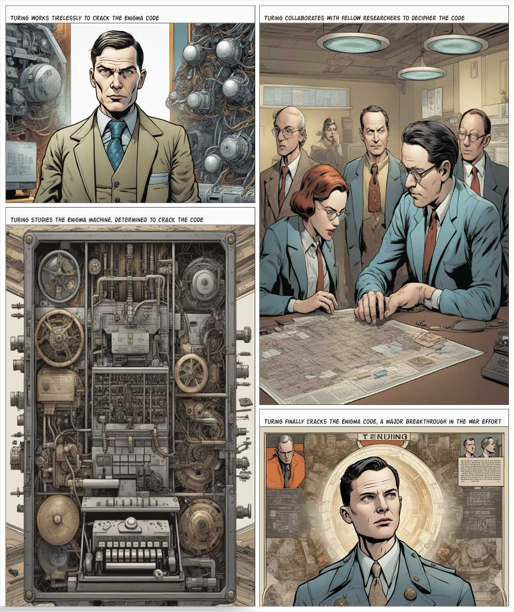

Alan Turing
Alan Turing (1912-1954) war ein britischer Logiker, Mathematiker, Kryptoanalytiker und Informatiker der mit seinen wegweisenden Forschungen auf dem Gebiet der theoretischen Informatik und der künstlichen Intelligenz als einer der Väter der modernen Computerwissenschaften gilt.
Turingmaschinen
- Mathematische Maschine, die eine abstrakt-formale Zeichenkette verarbeitet
- Schwerpunkte der Theoretischen Informatik (Berechenbarkeitstheorie) → Beweis, dass es keine Lösung für das "Entscheidungsproblem" existiert → Mathematik in gewissem Sinne unvollständig
- Half das Konzept eines Algorithmus zu formalisieren und legte damit den Grundstein für die Softwareentwicklung
- Grundlage für von-Neumann-Architektur (Von-Neumann-Rechner)
Enigma
- Turing war maßgeblich an der Entschlüsselung der deutschen Verschlüsselungsmaschine Enigma beteiligt
- Turingmaschine als theoretisches Modell für die Enigma (Entschlüsselungsmaschine)
- Turingmaschine als theoretisches Modell für die Enigma (Entschlüsselungsmaschine)
- Turingmaschine als theoretisches Modell für die Enigma (Entschlüsselungsmaschine)
Test auf künstliche Intelligenz
- Turing-Test: Test auf künstliche Intelligenz (KI) → Kommunikationspartner kann nicht mehr zwischen Mensch und Maschine unterscheiden 